The relation editor
The relation editor is where you tell the app which glyph of one formula becomes which glyph of the next. You link glyphs, choose how each pair moves, set the timing and watch the result, all in one dialog that changes the project only when you press Save relation.
Opening the editor
The editor opens on two clips: to make a new relation between them, or to change the one they already have. How relations work explains what a relation is; this page is about the tool.
A new relation is made where the playhead is: its window starts at the yellow line of the timeline, when a window fits there. Put the playhead where the transformation should begin, then ask for the relation. How relations work tells what happens when none fits.
From the timeline
Hold Shift. A link port, a small round dot, shows in the lower half of every clip. Click the port of the source clip, then click the target clip. A line follows the pointer between the two clicks; Esc cancels it. You can also drag from the port and release over the target.
If the two clips cannot be related, a notice says why: they have to be on different tracks, they have to overlap in time, and neither track can be locked. If they are related already, a menu opens where the pointer is and asks which of their relations to edit, or to add another: see below.
From the Animations panel
Select the source clip. On its Relations tab, choose the other clip in Relate with (1), the direction (2) and press Create relation… (3). When the two clips are related already, the button reads Edit or add a relation… and opens a menu: see below.
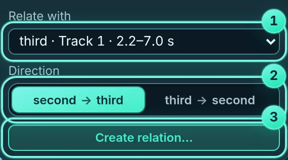
From a relation that exists
- Double-click its band or its arrow on the timeline.
- Right-click its band and choose Edit pairs….
- Press Edit… beside it in the Relations tab of a clip, or Edit pairs… in the panel of the selected relation.
Between two clips that are related already
Two clips can have several relations. So when you ask for a relation between two clips that have one already, with the button of the Relations tab or with a link port, a menu asks what you mean:
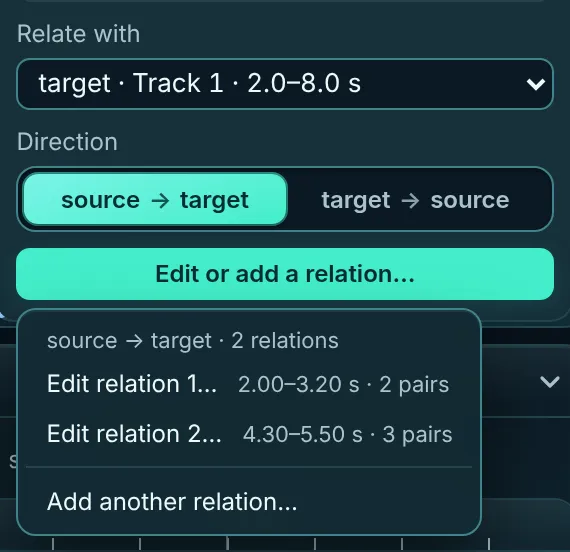
- Edit relation 1…, Edit relation 2…: the relations the two clips have in that direction, in the order of their windows, each with its window in seconds and its number of pairs. One opens that relation in the editor.
- Add another relation… opens the editor on a new relation between the same two clips. Its window starts at the playhead, or, when no window fits there, where the last one of theirs ends; with a region marked on the timeline, its window is the region. If it cannot be made (the clips no longer overlap, for one), the entry is off and a line under it says why.
The title of the editor then names the relation by its number,
Relation 2 of 2: source → target, and so does the list of the Relations tab. The
number is the order on the timeline: the relation that plays first is 1, and it follows the
window when you move it. The other direction counts apart: a relation from the second clip
back to the first is the first of its own.
A tour of the editor
This is the editor on the relation of a(b + c) into ab + ac. Step
through it, or let it go on by itself.
The editor works on a copy of the relation. Nothing changes in the project, neither the timeline nor the preview, until you press Save relation. Then the whole session is one undo step.
Linking glyphs
The source is on top and the target below, or at the left of it when that draws the glyphs of a tall formula larger (the drawing). The glyphs are the buttons: click them to select, and the toolbar under the drawing tells what is selected. You need not hit the ink of a glyph: a dashed circle follows the pointer, and a click takes the glyph under the pointer or, on none, the nearest one inside the circle. The glyph it would take is marked as you move, and its number appears at its lower left, the number the pair is stored by. A glyph that has a link takes the colour of its pair. The drawing also zooms and moves.
A glyph to a glyph
Click a glyph of the source, then a glyph of the target. The link appears, with the colour and the number of the new pair. You can start from the target as well. A plain click on a side that has nothing selected, while the other side has a selection, links at once.
One glyph to several
Hold Shift (or Ctrl) while you click to add glyphs to the selection of a side, or to take one out. With glyphs selected on both sides, press Link: they become one pair. Selecting several sources and then clicking one target links them at once, many-to-one.
With a box
Drag a rectangle over the glyphs: every glyph it touches is selected, on either formula. A side the box does not touch keeps its selection, so you can pick one side and then the other. Hold Shift or Ctrl when you press, and the box adds to the selection instead of replacing it.
Linking a target that is linked already
When you link a source to a target glyph that has a pair, the source joins that pair
instead of making a second one: two glyphs become one. A message says so
(Glyph b (2) joined pair 1: a (0), b (2) → a (0).). The new source has the style
of the pair it joined, and it joins the pair’s choice of how the extra sources arrive
(below).
Separate pairs onto one target
A pair has one style, so the sources that join cannot do different things: they all transform, or they all send a copy. To give each source its own style, and its own path, take the pair apart: right-click a glyph of the pair and choose Split into separate pairs. Each source becomes a pair of its own onto the same target, with the style it played (a source that only sent a copy becomes a Copy) and the path it followed. The animation is the same until you change one of them, unless the pair merged its sources (Merge): apart, every source arrives.
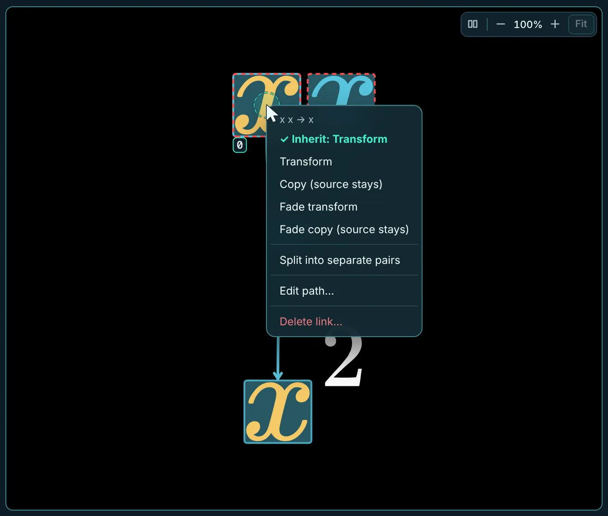
Join into one pair, in the menu of any pair whose target other pairs bring too, puts them back into one. Their paths are kept, as one path when they all followed the same one and as paths of their routes otherwise. One pair has one style, so the pairs can be joined when it can play what they play: the same style for all of them, or one that transforms with copies around it. Otherwise the entry is greyed out, with the reason under it: give the pairs one style first. A pair that merges its sources (Merge (Manim)) is not joined with another either, since each of its sources would then arrive on its own: set it to Separate first.
Pairs can share a target only inside one relation, and only when they bring exactly the same glyphs. Linking still joins by itself; the menu of the next section makes a separate pair while linking. Once two pairs bring a target, a new link onto it is one more pair of its own, and a message says so.
Choosing the style while linking
A link made by a click has the style of the relation: Transform, unless you changed it in the Animation tab. To give a pair a style of its own from the start, select the glyphs of one side and right-click a glyph of the other side, where you would have clicked it. The glyph joins the selection and a menu opens with Link as Transform, Link as Copy, Link as Fade transform and Link as Fade copy. With glyphs selected on both sides already, a right-click on any of them opens the same menu.
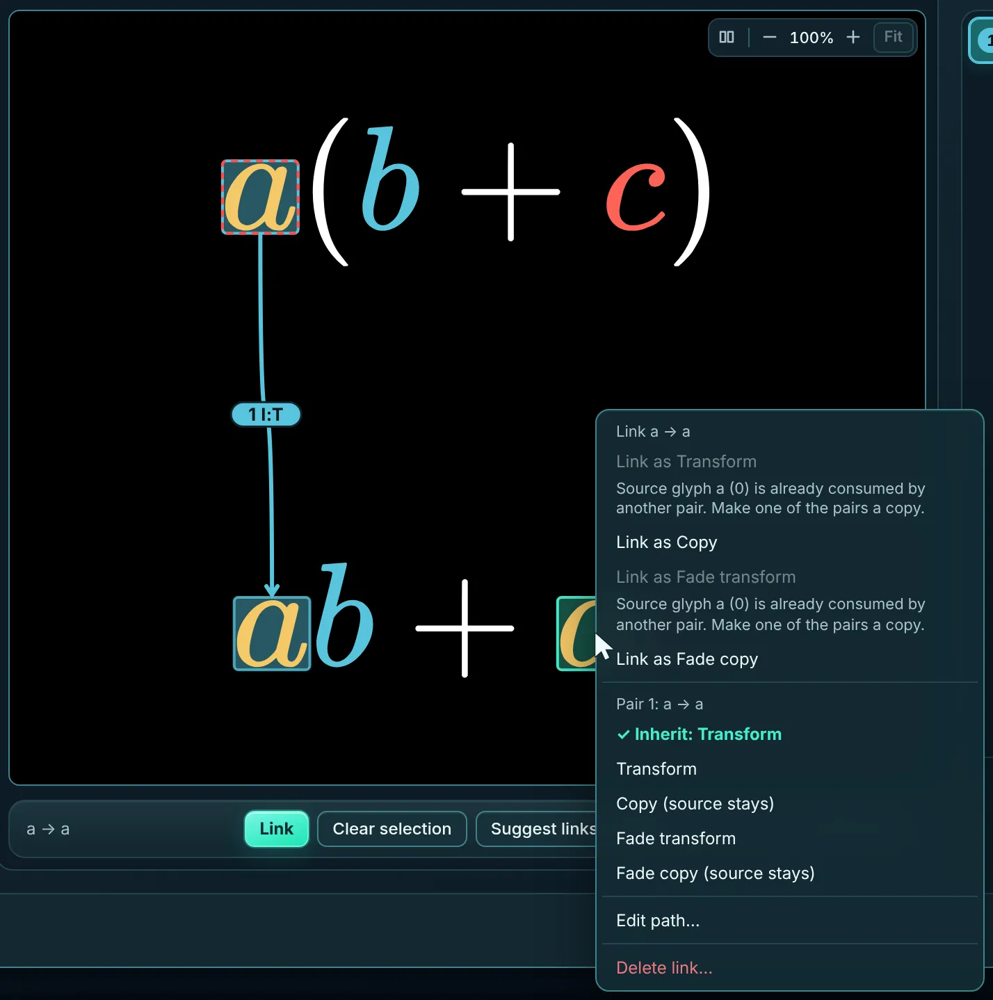
The menu tries each style before it offers it. A style those glyphs cannot take is greyed out, with the reason under it: a source that another pair consumes, or that another relation consumes later, can only be copied. When no style can be, as for a target that arrives through another relation, the reason is said once. A style that would bring a warning stays available, and the warning is written under it. Onto a target that has a pair the menu offers Join pair N, since by default the source joins that pair and takes its style, and under it Separate pair as Transform, Copy, Fade transform and Fade copy, which make a pair of its own onto that target. When the selected glyphs have links already, the entries of their pairs come after a line.
Suggest links by label
Suggest links by label proposes one-to-one links between glyphs that have the same label: the first x of the source with the first x of the target, the second with the second, in reading order, left to right and then top to bottom. A glyph that has a pair is left out. The suggestions are drawn dashed, with a bar that lists them. Accept all makes them pairs; Dismiss drops them. When no glyphs are left to match, the editor says so.
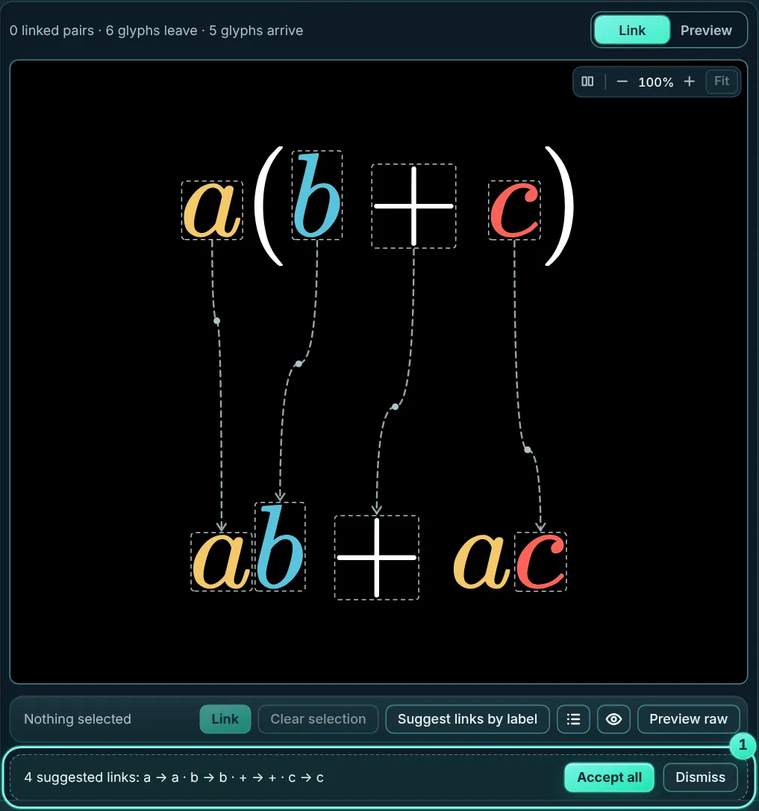
A suggestion is a start, not an answer: it knows labels, not mathematics. Accept it and fix what is wrong. Edit, in the pair list, takes a pair apart and selects its glyphs again: add the second a with Shift and press Link (the pair list, below).
From the keyboard
The key before the eye in the toolbar lists the glyphs of both formulas under the drawing, a key each, with its number and its label. A press does what a click on the glyph does, Shift and Ctrl included. The lists are left out until you ask for them, because they grow with the formulas; the browser remembers your choice. After a click on a glyph, Enter does what Link does. The menu key on one of these keys (or Shift+F10, or a right-click) opens the menu of the drawing: Link as, and the entries of the pairs.
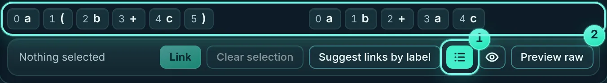
The eye hides the links and their badges, so that you can see the glyphs alone.
A source a transform consumes
A pair with the style Transform or
Fade transform consumes its sources: once it has played they are gone,
so another pair can only copy them. The drawing outlines such a source in red
dashes, and its tooltip names the pair that consumes it, for example
pair 1 consumes it (Transform): another pair can only copy it. Of several sources
that arrive as Copies, only the principal is outlined. A pair that
copies, Copy or Fade copy, leaves its sources
on screen and outlines nothing: give the pair one of those styles and the outline goes.
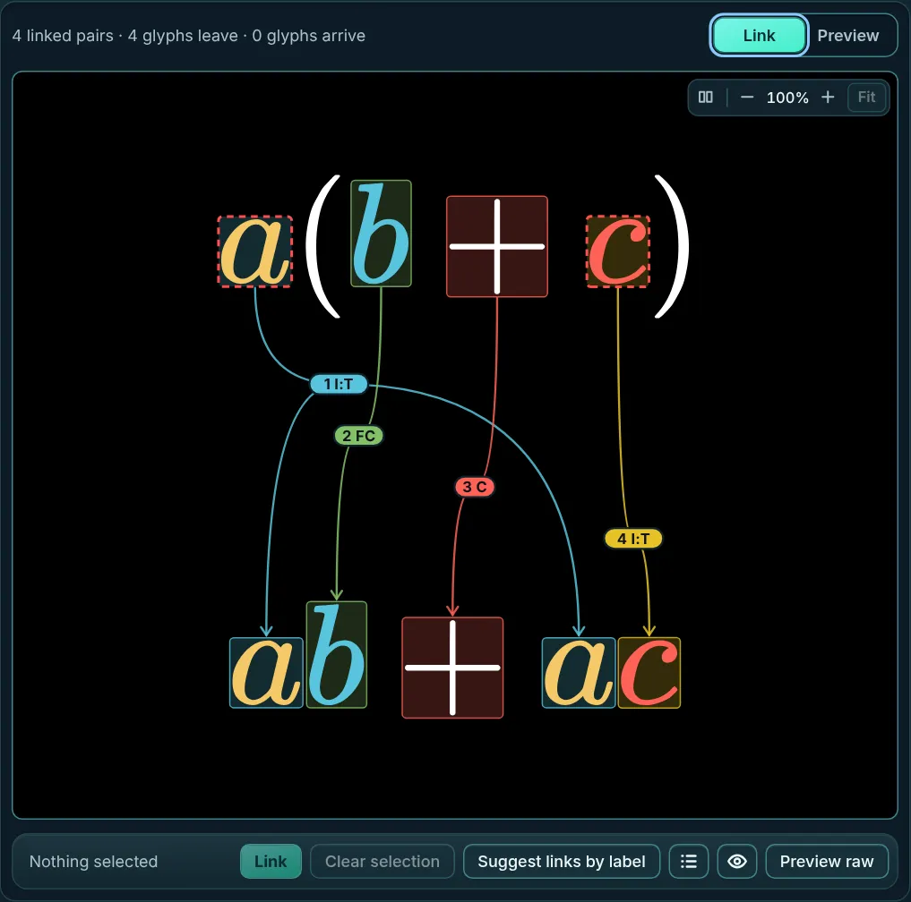
FC) and the plus sign is copied
(C): they stay, and have no outline.A source that another relation or a Morph block consumes, when this window starts or later, is outlined in the same way, and its tooltip names what consumes it.
What the editor refuses
Some links would be errors, and the editor says so instead of making them. The message sits under the toolbar.
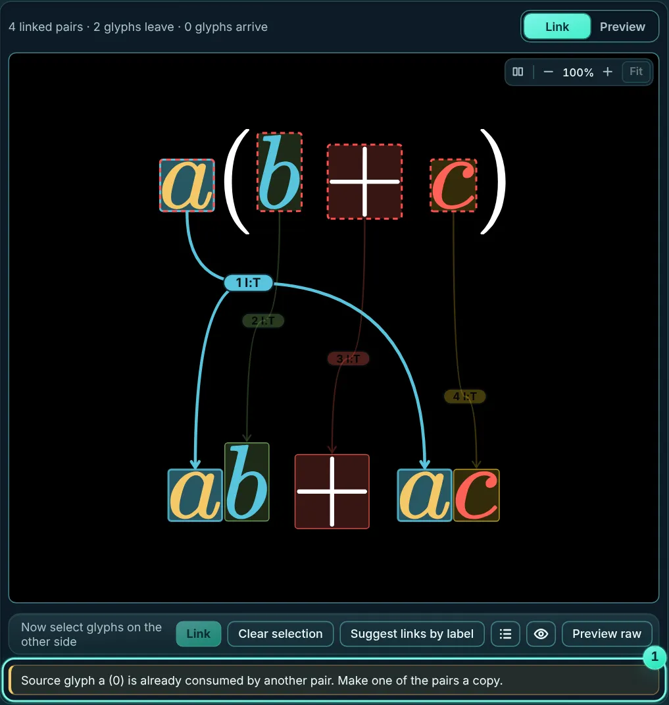
| The message says | What to do |
|---|---|
| A source glyph is already consumed by another pair. | A glyph can leave once. Make one of the two pairs a Copy, or put both targets in one pair. |
| Target glyphs are linked in different pairs. | Link onto the targets of one pair, to add a source to it. |
| A target glyph is not linked, while another is in pair N. | Link onto the targets of that pair alone, to add a source to it, or take the pair apart first with Edit. |
Glyphs another relation has taken
A glyph does one thing in the whole scene: it arrives through one pair and is consumed by one. In a second relation between two clips, or in a relation into a clip that another one feeds, some glyphs are spoken for. The drawing shows them dimmed, and their tooltip says why:
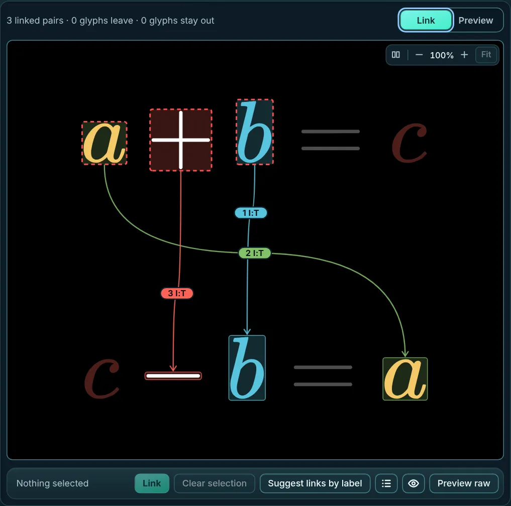
| The tooltip says | What it means |
|---|---|
| A target is brought in by another relation, or by a Morph block. | It arrives through that pair already. A second pair onto it would be an error. |
| A glyph was consumed earlier by another relation, or by a Morph block. | It turned into other glyphs before this window starts: it is gone. |
| A source is still arriving through another relation. | It is not whole yet when this window starts. Start the window once it has arrived. |
| Another relation takes a target before it would have arrived. | Something leaves from that glyph while this window would still be bringing it. End the window before that. |
| Another relation consumes it, or copies it later: here it can only be copied (not dimmed; outlined in red dashes when the other consumes it). | The other pair needs the glyph at the same time or later. A Copy or Fade copy pair can still start from it; a pair that consumes it cannot. |
| Another relation brings it in later: it is not on screen yet (not dimmed). | The source is not there when this window starts. Copied, it would appear out of nowhere; start the window once it has arrived. |
The other relation is named by its two formulas, and by its number when the two clips have
several: relation 1 of 2 (source → target). The reasons follow the window: move
it, in the Animation tab, and a glyph that was only noted can become
dimmed. A dimmed glyph can still be clicked; the link it
makes is listed among the problems.
Suggest links by label leaves these glyphs out.
The drawing: aim, zoom and layout
The drawing is the same in this editor and in the pair editor of a Morph block. It is spaced by the size of its text, the mark of a glyph is the glyph's own box, and the badges of the pairs keep their size on screen: a formula of several lines is drawn as large as the dialog allows.
- The circle is the Preview's circle selector, always on here: a minus sign, a dot or the bar of a fraction is easy to take. Shift and the wheel make it larger or smaller; it is one size for the Preview and for the two editors, and the browser remembers it.
- Ctrl and the wheel zoom about the pointer. The middle button, or Alt and a drag, moves the view; on a Mac a scroll moves it and a pinch zooms. The keys over the upper right corner zoom in steps and say how near the view is, and Fit shows the whole drawing.
- The drawing opens framed on what takes part: the glyphs that can be linked and those of the pairs made. When that is about all of it, it opens whole.
- There are two layouts. Stacked, the source is over the target and the
links go through the gap between them. Side by side, the source is at the left, each line of
a tall formula is beside its own, and the links are arcs over the two. The drawing opens in
the layout that draws the glyphs that can take part larger: stacked for most formulas of one
line, side by side for tall ones, whose glyphs would be small stacked. A short formula, as
xxintox²above, is drawn large either way, and opens stacked. The first key of the corner changes it while the editor is open. The raw preview follows the layout.
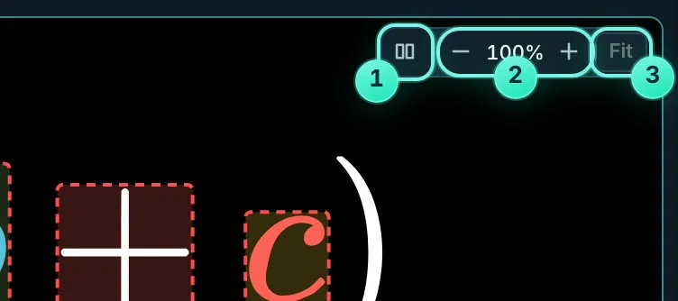
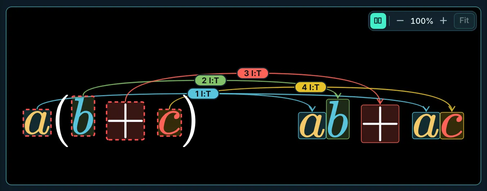
The pair list
The Pairs tab lists every pair of the relation, in the order you made them, with the number and the colour of its link. Each row has, from left to right:
- the glyphs of the pair,
a → a a, and its shape,1→2; - its style, in a list: Inherit: Transform (the relation’s Default style, whatever it is), Transform, Copy (source stays), Fade transform or Fade copy (source stays);
- Edit, which takes the pair apart: it leaves the list and its glyphs are selected again, so that you can change them and press Link;
- Edit path…, which saves the relation and opens the preview’s Edit-path mode on this pair;
- ×, which deletes the pair.
Point at a row and its links light up in the drawing; point at a glyph and its pairs light up in the list, which scrolls to them.
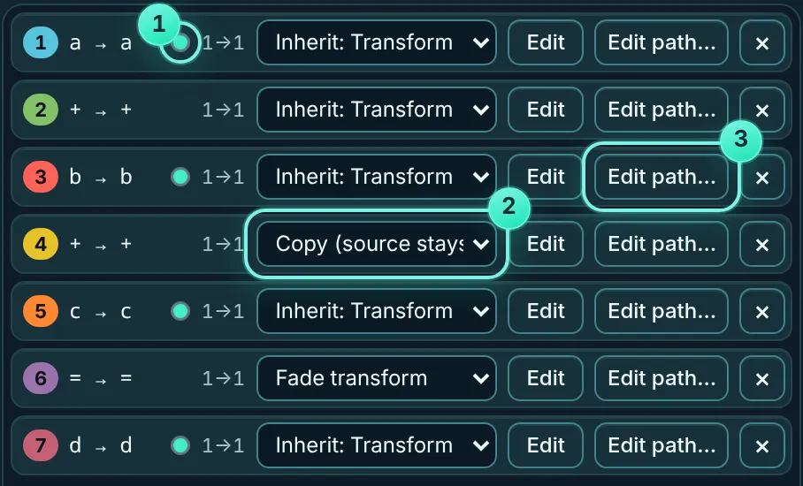
A pair of several sources and one target has one more row under it, Sources: how the sources beyond the first arrive (Separate, Merge (Manim) or Copies). How relations work shows the three. With Copies the row also names the principal source.
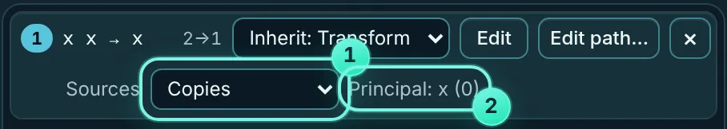
The menu of a pair
Right-click a glyph that has links. The menu is for the pairs that hold the selected glyphs: their style, all at once; Edit path… when it is one pair; Straight path to drop a path drawn by hand; Split into separate pairs or Join into one pair (above); and Delete link…, which asks first. A press on the badge of a link opens the same menu, when the pair holds a selected glyph.
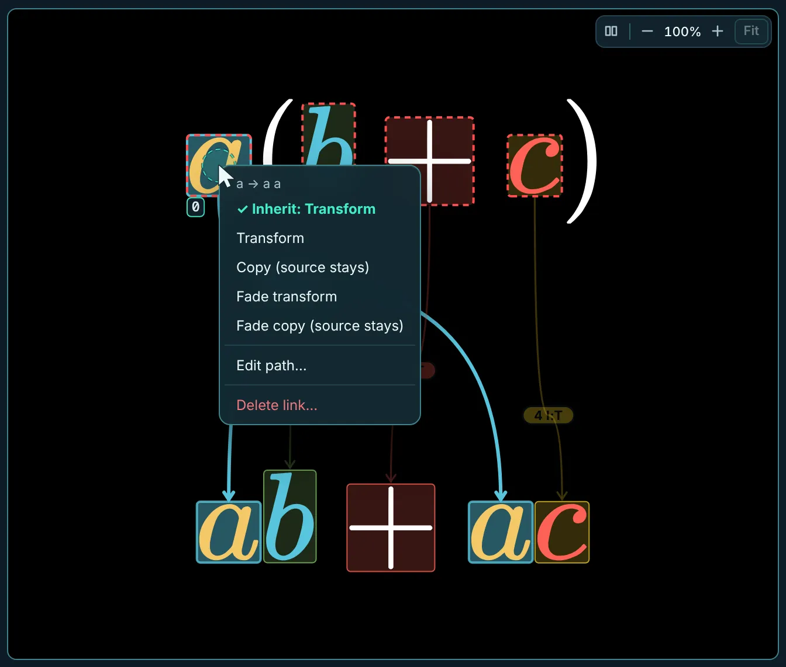
The Animation tab
The second tab of the side column has two groups of settings, shown in the last steps of the tour above.
- Timing and style: Offset and Duration of the window, with a line that gives the window in seconds and the range it is allowed in (and, for a new relation whose window could not start at the playhead, a line that says so); Easing; the Default style of the pairs; and the Path arc in degrees.
- Unpaired glyphs: what the glyphs of the source that no pair takes do when they leave (the Outro of the source clip), and what the glyphs of the target that no pair brings do when they arrive (the Intro of the target clip), each with its Duration and a checkbox that runs it during the window. A line over each names its glyphs, those that no relation and no block of the clip takes care of: 1 glyph of source is not taken away by a relation or a block (+), … is not brought in by a relation or a block (−). Between the two, Starts empty makes the target show only what is brought into it: its unpaired glyphs then stay out, and the fields of its intro wait.
The outro, the intro and Starts empty belong to the clips: changing them here changes those clips when you save. How relations work explains the window, the unpaired glyphs and a target that starts empty.
A press on the drawing, or on a key of the glyph lists, brings the Pairs tab back, with the row of the pair you pressed in view.
Problems and saving
The editor checks the relation as you work. What it finds is listed under both tabs, one line
each, led by error or warning. In the list of pairs, a pair with an error is
outlined in red, and a pair with only warnings in amber. A problem that is an
error keeps Save relation off, and the button says why. A warning only
tells you.
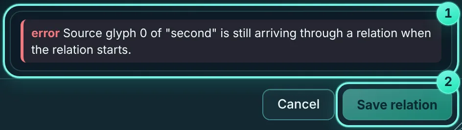
This one is common when you chain relations: the second formula is still receiving its glyphs when the next relation starts. Move the window of the new relation later, in the Animation tab, until it starts after the first one has ended.
Save relation is also off when there is no pair yet, when nothing has changed in a relation that exists, and when a formula changed under the editor: close it and open it again.
- Close closes the editor; once you have changed something it reads Cancel and asks Discard the changes to this relation? Esc does the same, after it has cleared the selection.
- Delete relation, on a relation that exists, asks before it deletes the relation and all its pairs.
- Saving is one undo step: Ctrl+Z takes back the whole session, pairs, window and the changes to the intro and the outro.
Watching it
The switch Link | Preview over the drawing puts the transformation in its place, and Preview raw, the last key of the toolbar, animates the drawing itself. Neither saves anything. Previewing a transformation shows both.
Try it
The widget below is a light version of the editor, on the relation of the page about relations. Link a few glyphs, then press Preview.
Where to go next
- Previewing a transformation: the Preview tab and Preview raw.
- Custom paths: what Edit path… opens.
- How relations work: pairs, styles, unpaired glyphs and timing.
- Morph blocks: the same pair editor, inside one formula.